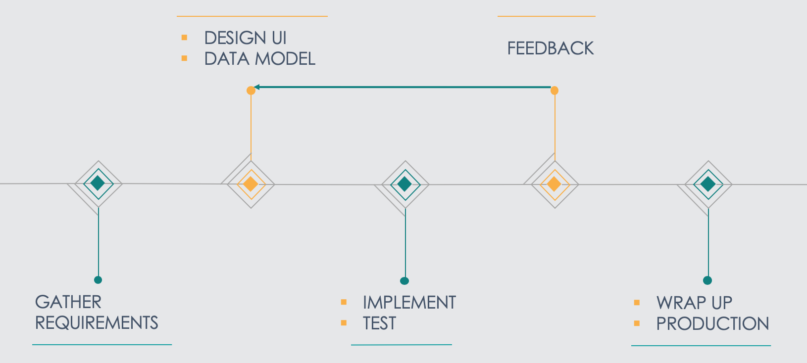
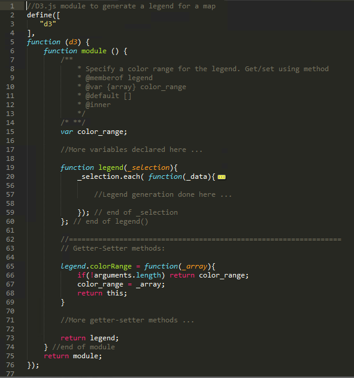
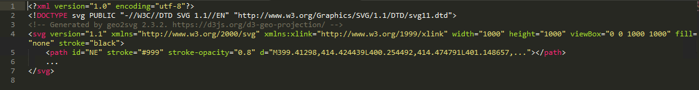

This tool provides a geographic representation of the impact of Competetive Bidding (CB) Policy introduced in CB areas by the Center for Medicare and Medicaid Services.
For different population types and groups, scores were assigned based on the health of the population after using the equipment for a certain period.
Two Considerations:
- Was to draw immediate attention to areas that were both negatively and positively impacted by the policy. The negatively impacted areas are in red and the positives are in blue.
- Check for similar trends in neighboring areas.
PROCESS:
As the main contributor on this project, I was involved in the Discussions, Brainstorming Sessions, Designing, Documenting and Implementation stages.

TECH STACK:
- JavaScript - JQuery
- D3.js for the map visualization and interactions
- require.js to include libraries, modules
- Bootstrap for the tutorial
I follow a Model-View-Controller pattern to structure the code:
Following is a module that creates a legend for a map:

The module code is collapsed to only reveal the structure.
The module contains a legend function nested within an outer function forming a closure.
It has getters and setters to help configure the module.
Structuring it this way helped create highly reusable visualizations.
SCREENSHOTS:
Click to view full screen ...
Click to view full screen ...
Click to view full screen ...
CHALLENGE:
The main concern with these D3.js map visuals is that it affected the initial load time. Relatively simple visuals like this one would take 15 to 20 seconds to load.
This was due to projection of the shapefile into SVG paths as the tool initially loaded.
To overcome this issue, I worked on a command-line cartography technique that generated projected SVG file that were then ready to use in the application.
This reduced the load time considerably from 20 seconds down to 2 seconds (by 10 times).
